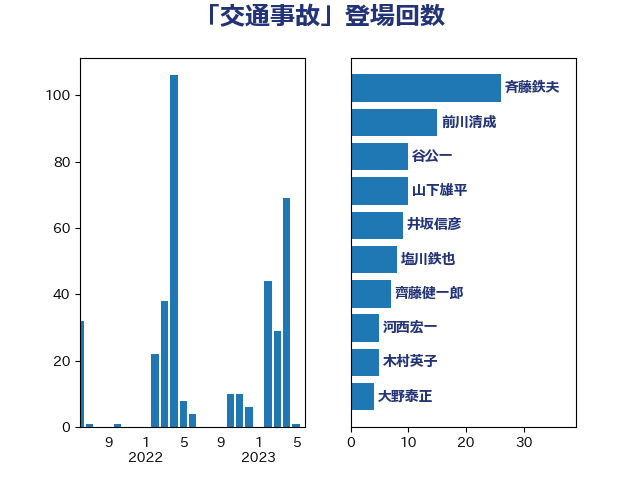

単語「交通事故」

| 斉藤鉄夫 | 公明党 | 26 回 |
| 前川清成 | 日本維新の会 | 15 回 |
| 谷公一 | 自由民主党 | 10 回 |
| 山下雄平 | 自由民主党 | 10 回 |
| 井坂信彦 | 立憲民主党 | 9 回 |
| 塩川鉄也 | 日本共産党 | 8 回 |
| 齊藤健一郎 | 無所属 | 7 回 |
| 河西宏一 | 公明党 | 5 回 |
| 木村英子 | れいわ新選組 | 5 回 |
| 大野泰正 | 自由民主党 | 4 回 |
| 中川康洋 | 公明党 | 4 回 |
| 鬼木誠 | 立憲民主党 | 3 回 |
| 青山大人 | 立憲民主党 | 3 回 |
| 鈴木義弘 | 国民民主党 | 3 回 |
| 緒方林太郎 | 無所属 | 3 回 |
| 浜口誠 | 国民民主党 | 3 回 |
| 小倉將信 | 自由民主党 | 3 回 |
| 室井邦彦 | 日本維新の会 | 3 回 |
| 大石あきこ | れいわ新選組 | 3 回 |
| 大口善徳 | 公明党 | 3 回 |
| 鎌田さゆり | 立憲民主党 | 2 回 |
| 野田聖子 | 自由民主党 | 2 回 |
| 若宮健嗣 | 自由民主党 | 2 回 |
| 米山隆一 | 立憲民主党 | 2 回 |
| 竹内真二 | 公明党 | 2 回 |
| 福島伸享 | 無所属 | 2 回 |
| 田村智子 | 日本共産党 | 2 回 |
| 河野太郎 | 自由民主党 | 2 回 |
| 平林晃 | 公明党 | 2 回 |
| 川田龍平 | 立憲民主党 | 2 回 |
| 岬麻紀 | 日本維新の会 | 2 回 |
| 宮崎勝 | 公明党 | 2 回 |
| 伊東信久 | 日本維新の会 | 2 回 |
| 高橋光男 | 公明党 | 1 回 |
| 高木かおり | 日本維新の会 | 1 回 |
| 高市早苗 | 自由民主党 | 1 回 |
| 阿部知子 | 立憲民主党 | 1 回 |
| 長峯誠 | 自由民主党 | 1 回 |
| 金子恭之 | 自由民主党 | 1 回 |
| 赤池誠章 | 自由民主党 | 1 回 |
| 谷田川元 | 立憲民主党 | 1 回 |
| 自見はなこ | 自由民主党 | 1 回 |
| 田所嘉徳 | 自由民主党 | 1 回 |
| 清水真人 | 自由民主党 | 1 回 |
| 浅野哲 | 国民民主党 | 1 回 |
| 水岡俊一 | 立憲民主党 | 1 回 |
| 森田俊和 | 立憲民主党 | 1 回 |
| 梅村聡 | 日本維新の会 | 1 回 |
| 梅村みずほ | 日本維新の会 | 1 回 |
| 柚木道義 | 立憲民主党 | 1 回 |
| 枝野幸男 | 立憲民主党 | 1 回 |
| 松木けんこう | 立憲民主党 | 1 回 |
| 平木大作 | 公明党 | 1 回 |
| 工藤彰三 | 自由民主党 | 1 回 |
| 山田勝彦 | 立憲民主党 | 1 回 |
| 山本佐知子 | 自由民主党 | 1 回 |
| 山岸一生 | 立憲民主党 | 1 回 |
| 山下芳生 | 日本共産党 | 1 回 |
| 尾身朝子 | 自由民主党 | 1 回 |
| 小林茂樹 | 自由民主党 | 1 回 |
| 寺田静 | 無所属 | 1 回 |
| 宮路拓馬 | 自由民主党 | 1 回 |
| 大西健介 | 立憲民主党 | 1 回 |
| 大島九州男 | れいわ新選組 | 1 回 |
| 國重徹 | 公明党 | 1 回 |
| 吉田久美子 | 公明党 | 1 回 |
| 古川禎久 | 自由民主党 | 1 回 |
| 古川元久 | 国民民主党 | 1 回 |
| 北神圭朗 | 無所属 | 1 回 |
| 佐々木さやか | 公明党 | 1 回 |
| 中条きよし | 日本維新の会 | 1 回 |
| 中村裕之 | 自由民主党 | 1 回 |
| 中川宏昌 | 公明党 | 1 回 |
| 上杉謙太郎 | 自由民主党 | 1 回 |
| たがや亮 | れいわ新選組 | 1 回 |